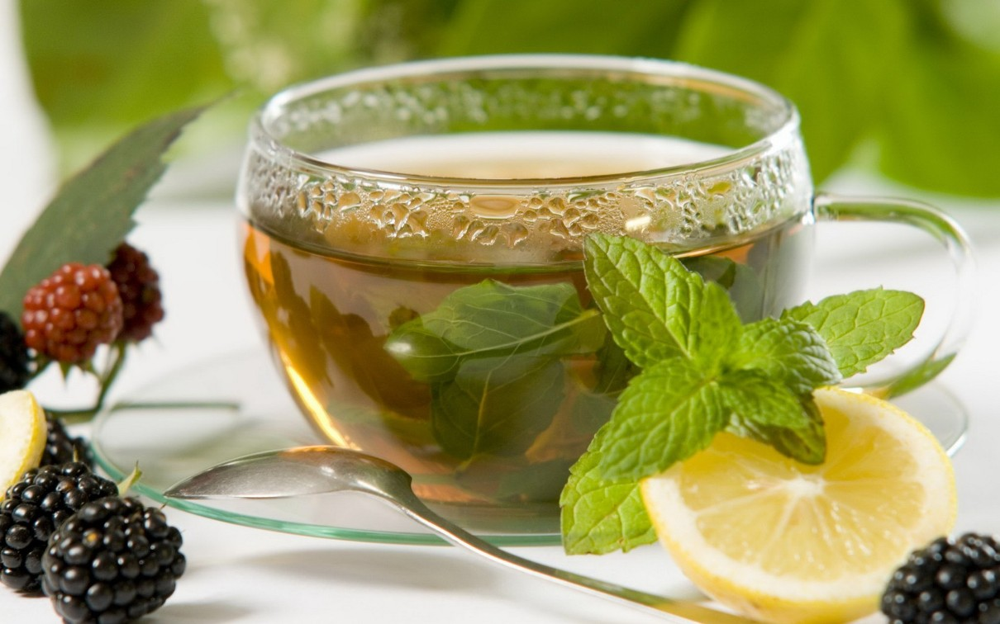
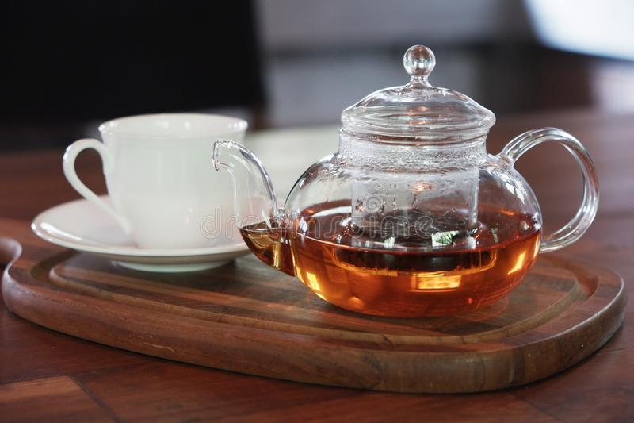

Il tè verde è conosciuto per il suo sapore leggermente amaro e erbaceo, e contiene una serie di composti benefici per la salute, come antiossidanti.
Viene spesso consumato come bevanda calda o fredda e può essere aromatizzato con erbe o frutta per creare una vasta gamma di sapori.
Semplice
2.
Tè Al Limone
Voto 7.5
Questo tè può essere preparato utilizzando foglie di tè nero o verde, a cui viene aggiunto il succo di limone o scorza di limone fresca per insaporirlo.
In alternativa, ci sono anche bustine di tè pre-confezionate al limone disponibili in commercio. Il tè al limone è popolare per la sua capacità di fornire una bevanda rinfrescante e leggermente acida,
che può essere servita calda o fredda e con o senza zucchero a seconda delle preferenze personali.
Dolce
3.
Tè Alla Menta
Voto 8
Il tè alla menta è una varietà di tè aromatizzato con foglie di menta, che conferiscono alla bevanda un sapore fresco, mentolato e piacevolmente rinfrescante.
Fresco

4.
Tè Earl Grey
Voto 9
Il tè Earl Grey è una varietà di tè nero aromatizzato con l'essenza di olio di bergamotto, un agrume che cresce principalmente in Italia.
Questa combinazione unica di tè nero e bergamotto conferisce al tè Earl Grey un sapore floreale e fruttato, con un aroma intenso e distintivo.
Inebriante

5.
Tè Arancia e Cannella
Voto 10
Il tè arancia e cannella è popolare per il suo sapore caldo e accogliente, che lo rende particolarmente adatto per le fredde serate invernali. Inoltre, sia l'arancia che la cannella sono ricchi di antiossidanti e composti benefici per la salute, il che rende questo tè una scelta sana e gustosa per gli amanti del tè.
Il tè arancia e cannella può essere consumato al naturale o con un po' di zucchero o miele, a seconda delle preferenze personali.